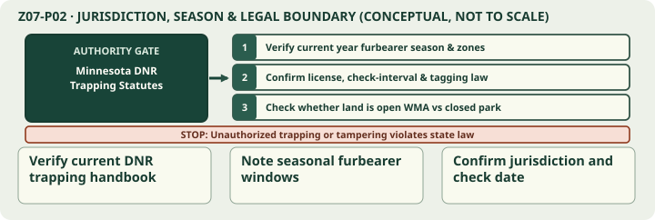

Z07-P02 · Traps and snares · New manuscript
Minnesota Trapping Licenses, Seasons and Statutory Limits
Outline the statutory framework governing regulated furbearer trapping in Minnesota so travelers recognize where lawful seasonal sets may exist.
When it applies · Understanding Minnesota DNR regulated trapping rules and seasonal windows.
Equipment · Current Minnesota DNR Hunting & Trapping Regulations handbook.

Actions
- Recognize that regulated trapping in Minnesota requires specific state licenses, species-specific open seasons, statutory trap-size/type rules, mandatory check intervals, and legal land access.[L01]
- Check the current annual Minnesota DNR Hunting & Trapping Regulations (recording exact check date) because furbearer zones, quotas, and gear rules change between seasons.[L01]
- Understand that regulated furbearer harvest occurs primarily in autumn and winter on open public forests, WMAs, and permission-granted private lands—not in state parks or SNAs.[L01, L07]
Failure recognition · Assuming trapping is unregulated or occurs only in remote wilderness leaves hikers and dog owners unprepared on multi-use autumn public lands.[L01, L07]
Verify · Current season dates, land-use status, and statutory restrictions are verified directly with MN DNR.[L01, L07]
Stop or change course · Stop assuming any rule from prior years remains valid; confirm current statutes with MN DNR before entering multi-use seasonal lands.[L01]
Evidence and editorial notes
- L01 · Minnesota DNR · Minnesota Trapping Regulations and Fur Harvest Rules (Current web edition)
- Section: Minnesota trapping licensing, seasons, and statutory limits · Conditions: Any regulated trapping activity or legal reference in Minnesota
Support: Trapping is strictly regulated by license, season, species, trap type, set location, check intervals, and landowner permission; unauthorized trapping is illegal.
Limitations: Emergency narratives never create an exemption to set traps or snares; verify current statute and DNR handbook every season. · Conflicting evidence: None noted.
Editorial note: Primary Z07 legal boundary. · Specialist reviewer: Wildlife law and DNR enforcement reviewer
Primary source · checked 2026-11-25 - L07 · Minnesota DNR · Scientific and Natural Areas Visitor Rules and Prohibitions (Current web edition)
- Section: Hunting and trapping · Conditions: Minnesota SNA and adjacent state land
Support: Verify the current rules for the precise site. Minnesota DNR lists trapping rules by SNA.
Limitations: Use separate state-park, recreation-area, and other land rules. Private permission does not supersede law. · Conflicting evidence: Conditions are recorded in the A03 audit.
Editorial note: Clarifies where bystanders/pets may encounter lawful sets. · Specialist reviewer: Public-lands manager
Primary source · checked 2026-11-25
Source lineage · New manuscript (Z07 P18 legal requirements) · Classification · New manuscript.